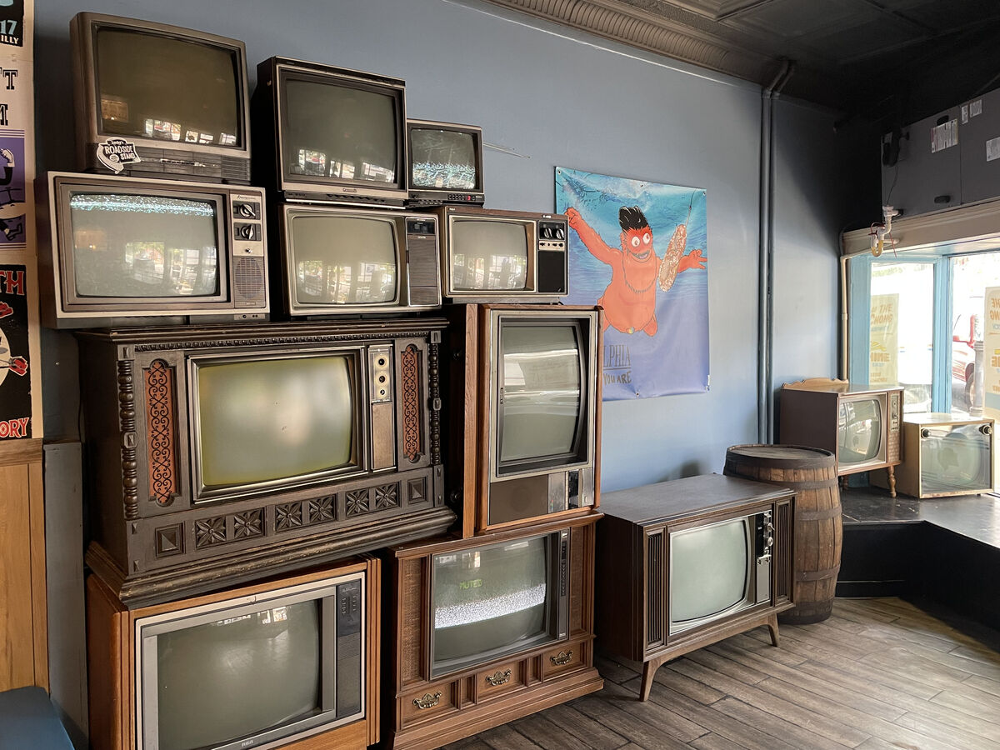

I'm Finnicker(Finn).
My life is Finicky.
This will be my own Digital Garden and a goal/hobby for me to work towards.
My hope is to create a space where i can pour a part of myself in.
Disclaimer: This website is a work in progress and any and all parts of the website may not be functioning at anytime.
- My New Website
- Github: @_mygithubid_
- Twitter: @_mytwitterid_